Before you begin This handbook documents the actual local Strapi admin used by the Forum MVP. Screenshots were captured from the running application in dark mode. The Dashboard, Inquiry, and Program screens shared in the request are covered by refreshed captures, together with other available main screens and key forms.
The temporary Documentation Preview account and sample inquiry are removed after capture. Existing admin credentials, permissions, and website content were not changed. Personal account email addresses are redacted; token values are not shown. Counts and timestamps are illustrative. External marketplace pages and paid-feature onboarding are outside this guide.
1. Getting around the admin Sign in, understand the navigation, and manage your own preferences.
SCREEN 1.1
Sign in to Strapi Navigation: http://localhost:1337/admin
The entry point for staff who manage website content.
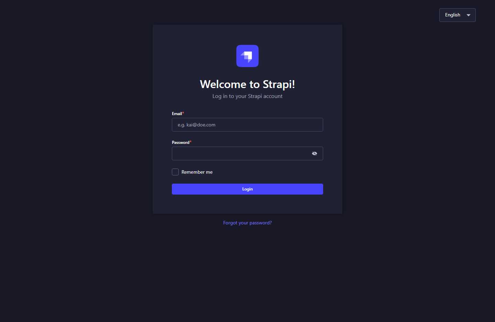
Figure 01. Sign in to Strapi. Click to open at full resolution. What to do Enter your administrator email and password, then choose Login. Use an account invited by an existing administrator. The website does not offer customer sign-in. If the page cannot load, confirm PostgreSQL and Strapi are running; local startup steps are in LOCAL_SETUP.md. Note: Do not share administrator passwords. Password recovery depends on a working email provider.Back to contents SCREEN 1.2
Dashboard and navigation Navigation: Home icon in the left rail
A quick view of recent edits, published content, profile information, and project statistics.
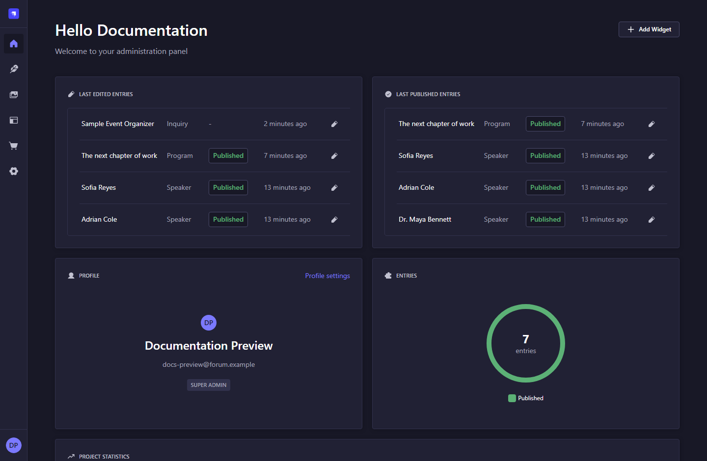
Figure 02. Dashboard and navigation. Click to open at full resolution. What to do Select a recent entry to open it directly in Content Manager. Use the left rail for Content Manager, Media Library, Content-Type Builder, and Settings. Counts and timestamps change as content changes; they are not website analytics. Note: The temporary Documentation Preview account and sample inquiry are shown for illustration. They are removed after capture.Back to contents SCREEN 1.3
Dashboard widgets Navigation: Home > Add Widget
Choose from dashboard widgets that are not already displayed.
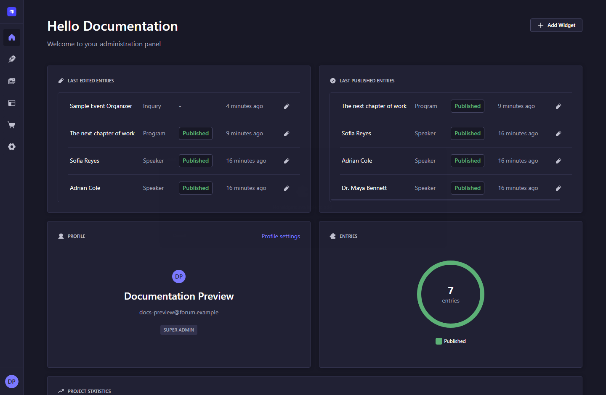
Figure 03. Dashboard widgets. Click to open at full resolution. What to do Select Add Widget to view available widgets. In this capture all available widgets are already present, so the dialog reports that none can be added. Close the dialog to return to the dashboard. Widget controls do not publish website content. Note: The screenshot shows the current empty widget-selection dialog, not a missing application feature.Back to contents SCREEN 1.4
Your profile and preferences Navigation: Profile avatar > Profile settings
Manage the signed-in administrator account and interface preferences.
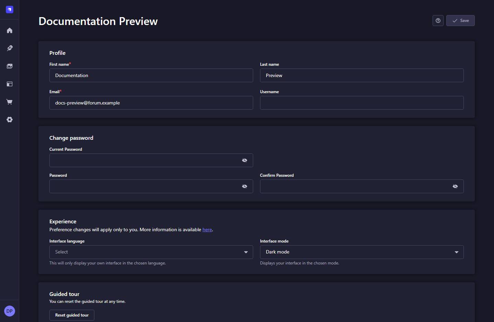
Figure 04. Your profile and preferences. Click to open at full resolution. What to do Edit your profile fields and choose Save when a change is intentional. Use the password section to change your password; provide the required current password and confirmation. Choose interface language and light/dark mode under Experience. Preferences apply to your account. Note: Interface language changes the admin UI; it does not translate website content.Back to contents 2. Managing speakers Create a complete profile, publish it, and control homepage visibility.
SCREEN 2.1
Speaker collection Navigation: Content Manager > Speaker
Find and manage all speaker entries, including draft and published profiles.
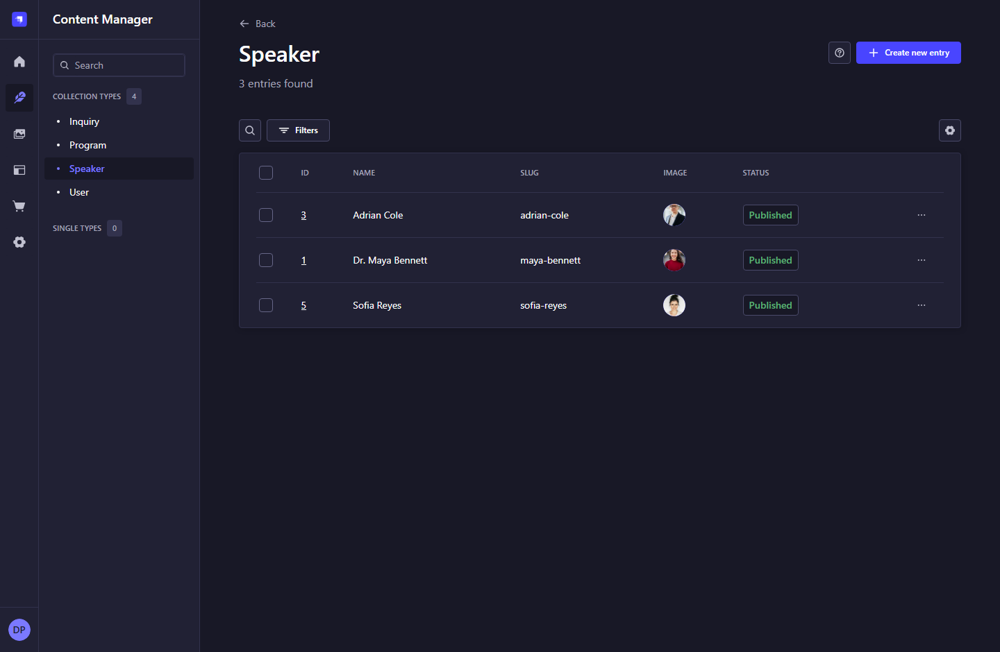
Figure 05. Speaker collection. Click to open at full resolution. What to do Choose Create new entry to add a speaker, or select an existing row to edit it. Use Search and Filters to locate records; use column headers or View settings where available. Check the Status column before expecting a profile to appear on the website. Note: The list is an admin view. The public website only requests published content.Back to contents SCREEN 2.2
Create a speaker Navigation: Content Manager > Speaker > Create new entry
Enter the speaker information that powers cards and the detail page.
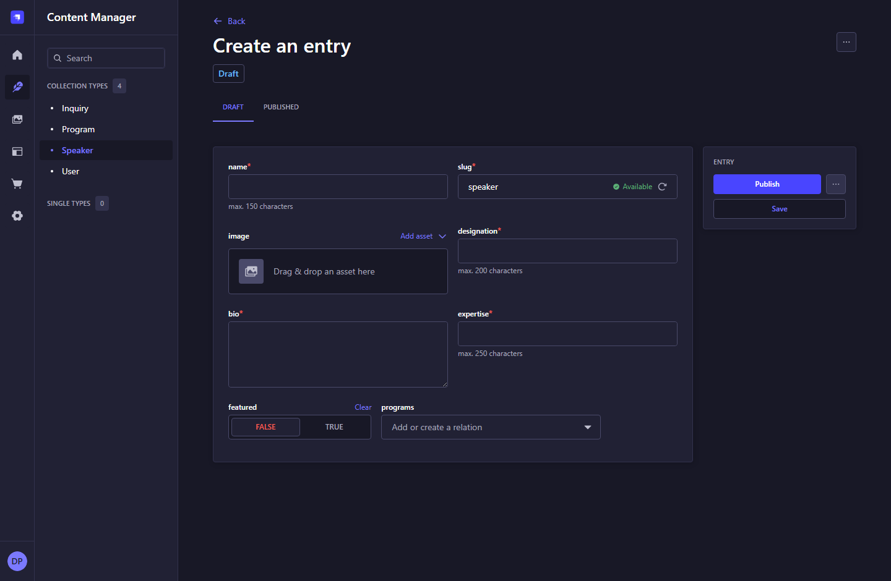
Figure 06. Create a speaker. Click to open at full resolution. What to do Fill name, slug, designation, bio, and expertise. Required fields have an asterisk. Add one image, use a clear portrait, and provide meaningful alternative text in the media record. Enter expertise as comma-separated topics. Set featured to TRUE when the profile should be eligible for the homepage. Choose Save to keep a draft. Choose Publish when the profile is ready for public display. Note: An example slug is maya-bennett. The public address becomes /speakers/maya-bennett.Back to contents SCREEN 2.3
Edit an existing speaker Navigation: Content Manager > Speaker > select a row
Review and update profile text, imagery, featured status, and linked programs.
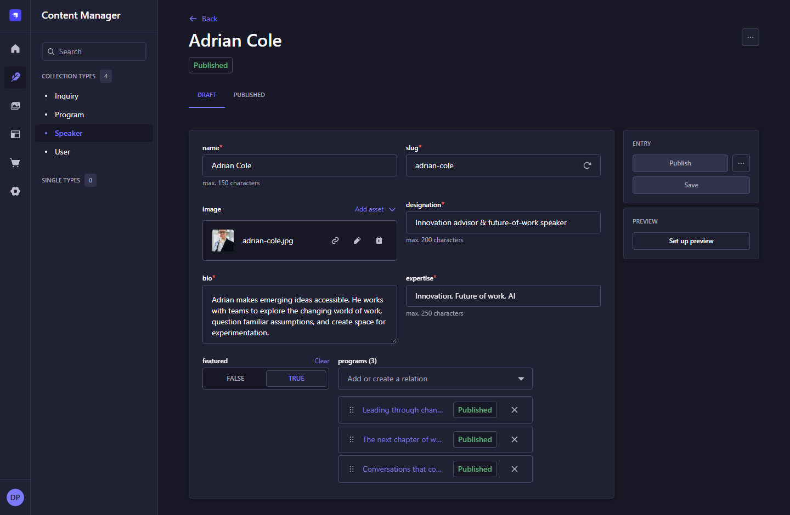
Figure 07. Edit an existing speaker. Click to open at full resolution. What to do Edit the draft version and save your changes. Saving alone does not update the published version. Choose Publish to make the revised content visible. Compare Draft and Published tabs when reviewing differences. Keep the slug stable after publication. Changing it changes the public URL. Open the corresponding public profile to verify the result. Note: The programs field is the reverse side of the Program speakers relation. Publishing a speaker does not automatically publish a related program.Back to contents SCREEN 2.4
Publish, unpublish, and discard changes Navigation: Entry editor > three-dot menu beside Publish
Manage the live version and any unpublished edits.
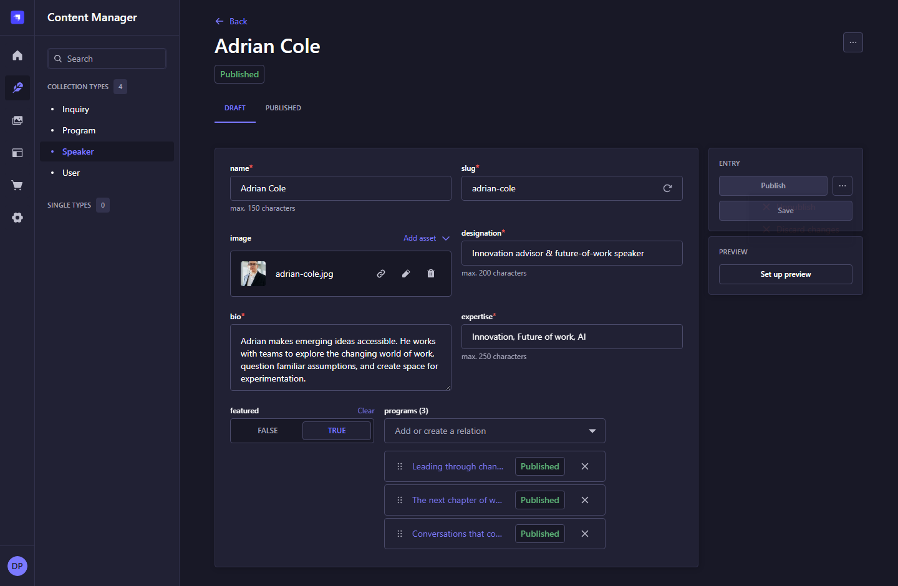
Figure 08. Publish, unpublish, and discard changes. Click to open at full resolution. What to do Choose Publish after checking required fields and content quality. Open More document actions to see Unpublish and Discard changes when available. Unpublish removes the live version from public listings and detail pages; it keeps the record in the CMS. Discard changes removes unpublished edits. Use the entry or row action menu for Delete only when permanent removal is intended. Note: Do not confuse Save with Publish. Deleting an entry is different from unpublishing it.Back to contents SCREEN 2.5
Find records with filters Navigation: Content Manager > a collection > Filters
Narrow the admin list without changing content.
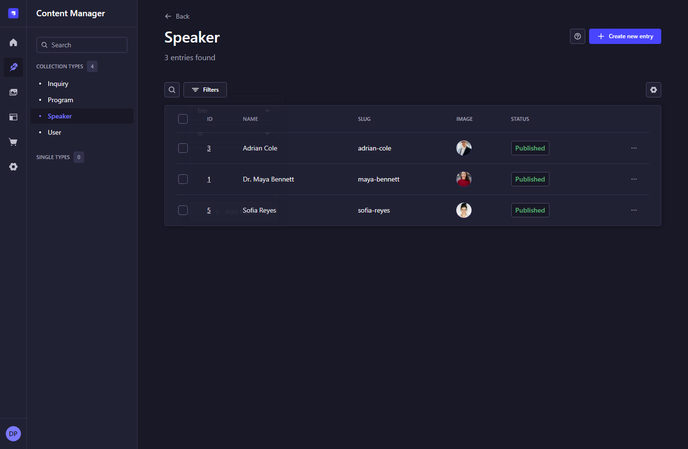
Figure 09. Find records with filters. Click to open at full resolution. What to do Choose a field and comparison, then enter the value to filter by. Add another condition when a narrower result is needed. Clear the search and filters before concluding that an entry is missing. Note: Admin list filtering is separate from the public website, which has no advanced search in this MVP.Back to contents 3. Managing programs Maintain program descriptions, images, durations, and related speakers.
SCREEN 3.1
Program collection Navigation: Content Manager > Program
Review available program entries and their publication status.
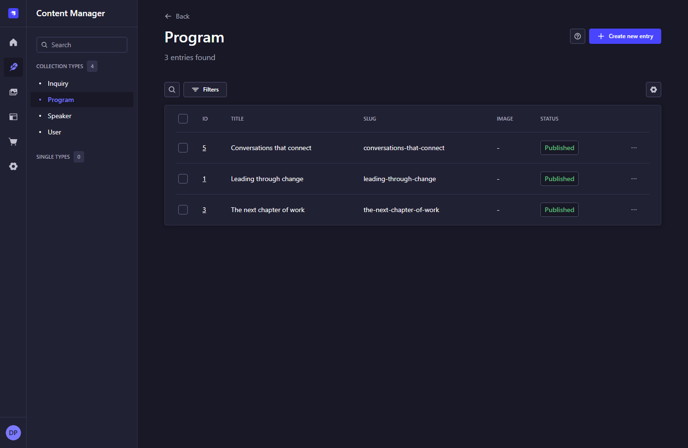
Figure 10. Program collection. Click to open at full resolution. What to do Select a row to inspect or edit a program. Choose Create new entry to add a program. Check its slug and status before testing the public detail page. Note: A dash in the Image column means no media is attached. The frontend displays a designed visual fallback.Back to contents SCREEN 3.2
Create a program Navigation: Content Manager > Program > Create new entry
Define a learning experience for the program cards and detail page.
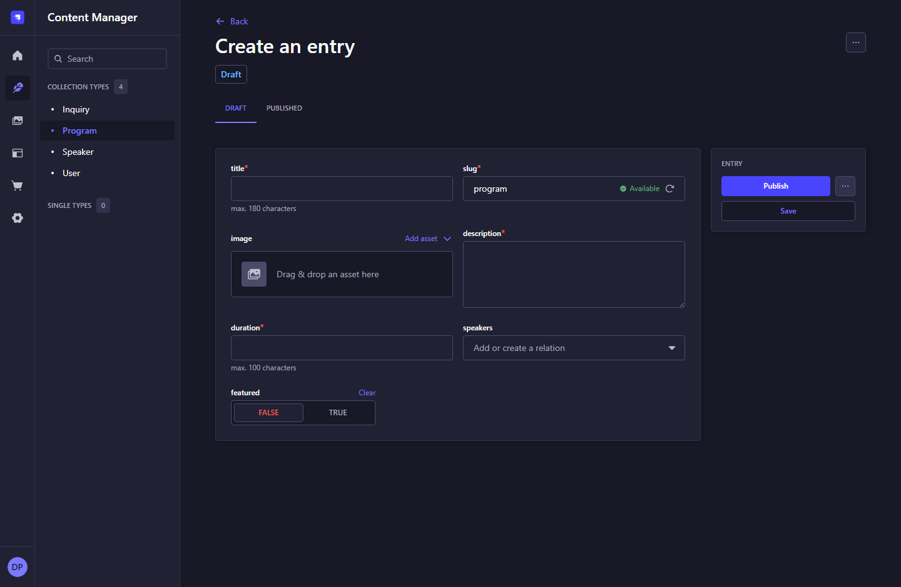
Figure 11. Create a program. Click to open at full resolution. What to do Fill title, slug, description, and duration. Duration is readable text, such as Half-day workshop. Add one program image when available. Use paragraph breaks in description; it is plain text, not an HTML editor. Choose related speakers in the speakers relation field. Publish those speaker profiles as well. Set featured to TRUE if appropriate, then Save and Publish when ready. Note: The public detail URL follows /programs/<slug>. No booking, payment, or scheduling engine is connected to duration.Back to contents SCREEN 3.3
Edit a program and its speakers Navigation: Content Manager > Program > select a row
Update the published experience and the speaker cards associated with it.
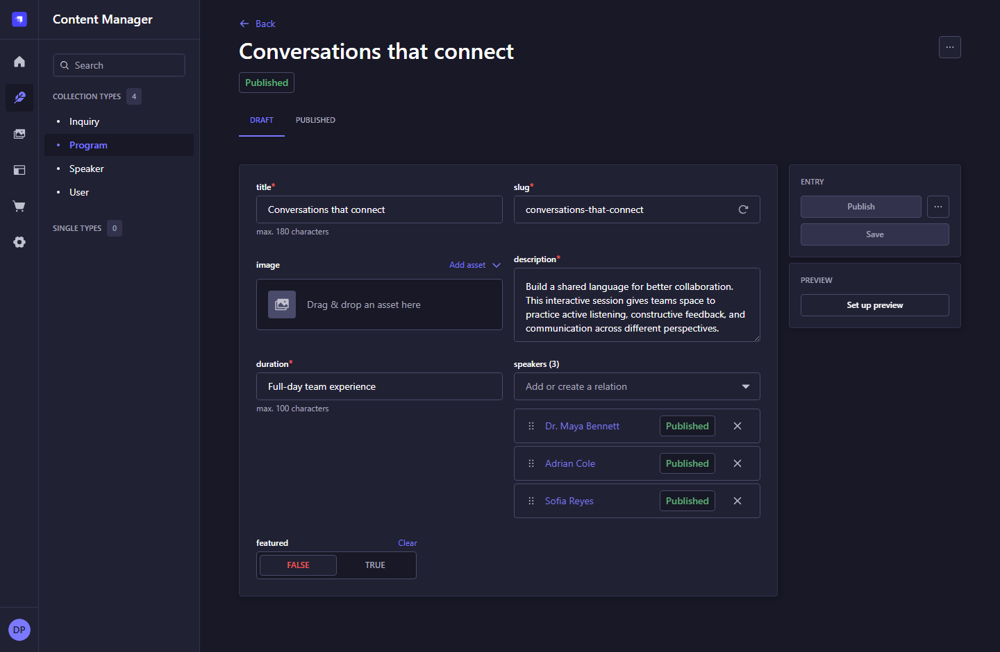
Figure 12. Edit a program and its speakers. Click to open at full resolution. What to do Review description, duration, image, and featured status. Use the relation selector to add speakers; use the remove control to detach a relation. This does not delete the speaker. Save the draft, then Publish the program to apply changes to the website. Verify the program detail page and its facilitator section. Note: The homepage displays up to two featured programs. Public programs are sorted by title, not by manual relation order.Back to contents 4. Reviewing contact inquiries Find and read messages submitted through the website contact form.
SCREEN 4.1
Inquiry collection Navigation: Content Manager > Inquiry
View contact requests stored securely in Strapi.
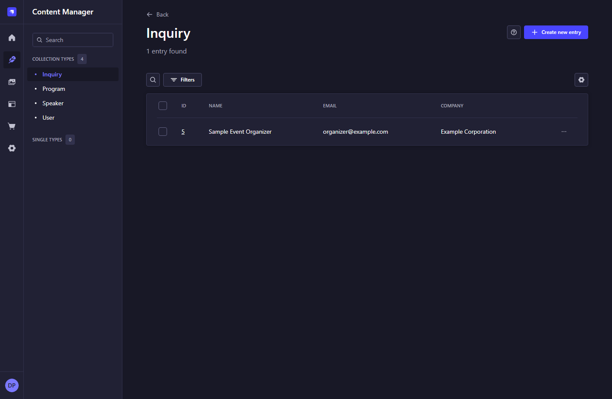
Figure 13. Inquiry collection. Click to open at full resolution. What to do Open the collection to see the sender, email, and company. Select a row to read the complete message and submission date. Use Search or Filters to find a sender or organization. Note: The example inquiry in these captures is temporary documentation data. Real inquiries are not publicly listed.Back to contents SCREEN 4.2
Read an inquiry Navigation: Content Manager > Inquiry > select a row
Review the information needed for a human follow-up.
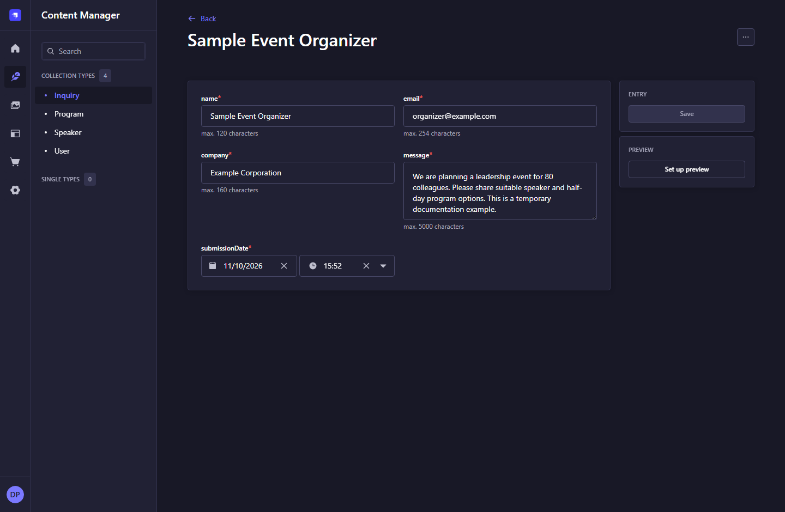
Figure 14. Read an inquiry. Click to open at full resolution. What to do Read name, email, company, message, and submissionDate. Contact the sender through your normal business communication process. Keep the original message and timestamp intact unless correcting a documented data-entry error. Note: There is no Publish action, response-status workflow, or automatic email notification for inquiries in this MVP.Back to contents SCREEN 4.3
Empty inquiry results Navigation: Content Manager > Inquiry > empty or filtered list
Understand the No content found state.
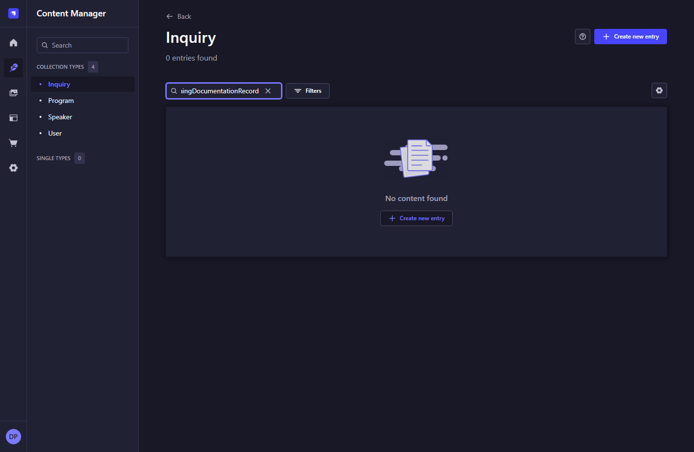
Figure 15. Empty inquiry results. Click to open at full resolution. What to do If a search or filter is active, clear it to see all available records. If no inquiries have been submitted, this state is expected. To test the actual intake flow, submit the website Contact form and return to this list. Note: This screenshot uses a search with no matches. An empty collection displays the same no-content result.Back to contents SCREEN 4.4
Manual inquiry entry Navigation: Content Manager > Inquiry > Create new entry
A standard Strapi form that can be used for intentional manual data entry.
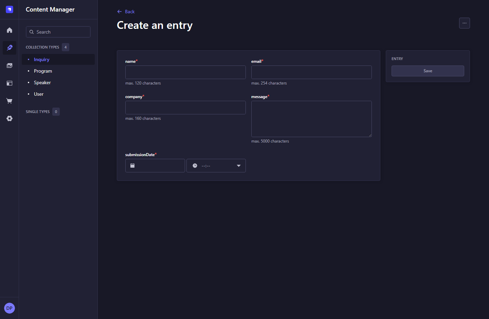
Figure 16. Manual inquiry entry. Click to open at full resolution. What to do Normal inquiries should arrive through the website contact form. For a manual record, fill all required sender, company, message, and date fields and choose Save. A manually created entry does not prove that the website submission flow is working. Note: The website and CMS intake endpoint set the submission date on the server. The generic admin form permits authorized staff to enter it manually.Back to contents 5. Working with images Upload assets, select them in entries, and maintain useful metadata.
SCREEN 5.1
Media library and folders Navigation: Media Library > API Uploads
Browse and manage the uploaded speaker portraits and other assets.
Figure 17. Media library and folders. Click to open at full resolution. What to do Open a folder to see its contents. The API Uploads folder contains the current sample portraits. Use search, sorting, filters, or grid/table view to find an image. Select an asset to inspect its metadata, or use New to add files or folders. Note: The Home folder can be empty while assets exist inside API Uploads.Back to contents SCREEN 5.3
Asset details and alternative text Navigation: Media Library > select an asset
Inspect dimensions and file size, and maintain image metadata.
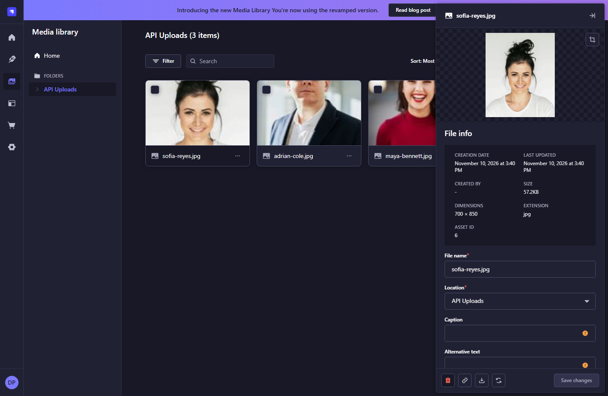
Figure 19. Asset details and alternative text. Click to open at full resolution. What to do Check the preview, file name, dimensions, and location. Add meaningful Alternative text that describes the image; scroll the details panel if necessary. Choose Save changes after an intentional metadata edit. Avoid deleting assets that are still used by a published profile or program. Note: The included portraits illustrate fictional sample speakers. Replace them with approved real assets before launch.Back to contents SCREEN 5.4
Import an image from a URL Navigation: Media Library > New > File upload from URL
Import a remotely hosted asset into the media library.
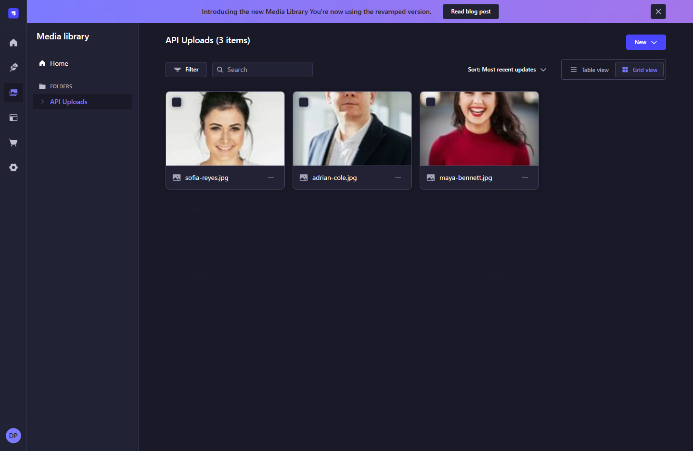
Figure 20. Import an image from a URL. Click to open at full resolution. What to do Enter the image URL in the Import from URL dialog. Use a separate line for each additional URL, as indicated by the dialog. Choose Upload only for assets you are authorized to use, then attach the imported image to an entry. Note: This screen is documented for completeness. No remote imports were submitted while producing this guide.Back to contents 6. Understanding the content models Reference the existing schema; content editing belongs in Content Manager.
SCREEN 6.1
Speaker content model Navigation: Content-Type Builder > Speaker
The structure of a speaker entry, including its reverse program relation.
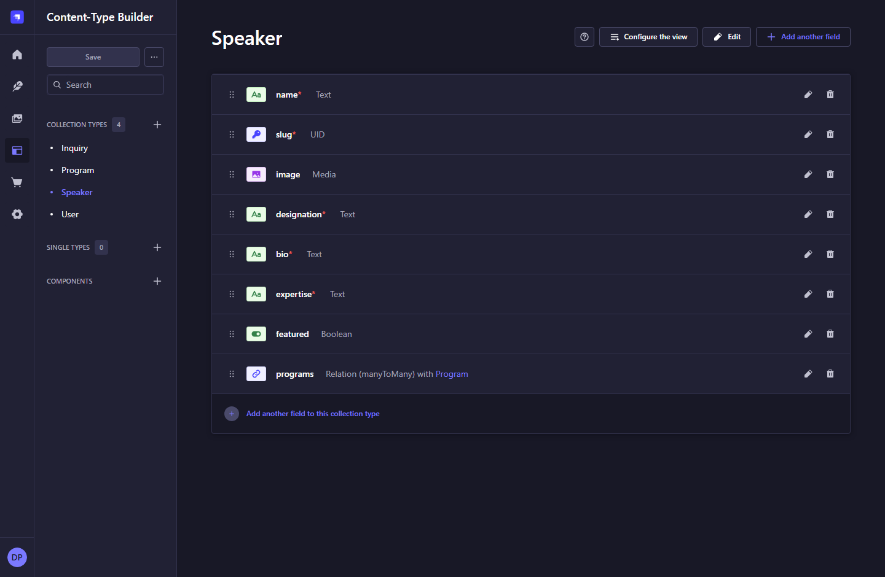
Figure 21. Speaker content model. Click to open at full resolution. What to do Review name, slug, image, designation, bio, expertise, featured, and programs. Use Content Manager for routine record creation and editing. Coordinate field additions, removals, or type changes with the developer so the frontend and database remain compatible. Note: Content-Type Builder is a development tool. Schema editing may be unavailable in a production Strapi deployment.Back to contents SCREEN 6.2
Program content model Navigation: Content-Type Builder > Program
The structure of program content and its many-to-many speaker relation.
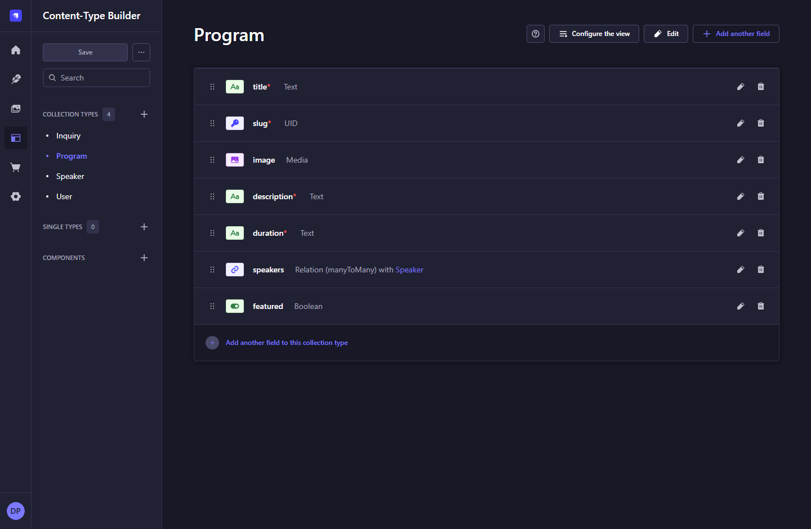
Figure 22. Program content model. Click to open at full resolution. What to do Review title, slug, image, description, duration, speakers, and featured. One program can reference several speakers, and a speaker can belong to several programs. The model supports Draft & Publish. Relation changes must be published with the entry to reach the website. Note: Removing a relation is different from deleting either related record.Back to contents SCREEN 6.3
Inquiry content model Navigation: Content-Type Builder > Inquiry
The private contact-submission model.
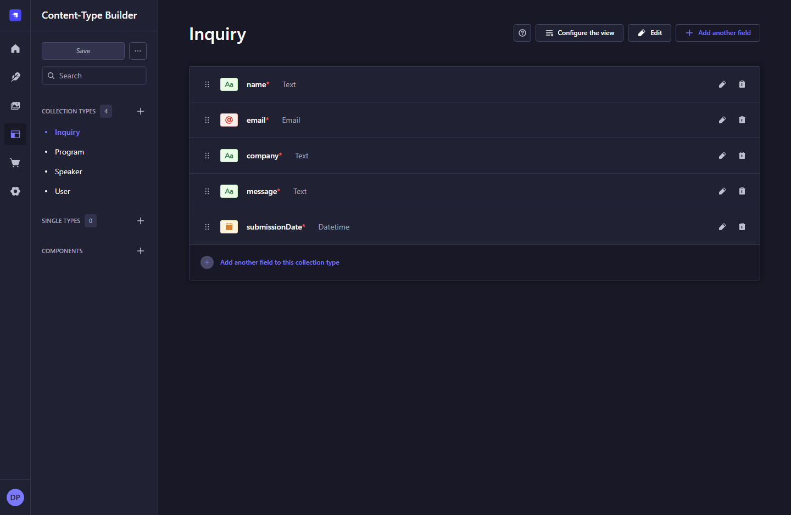
Figure 23. Inquiry content model. Click to open at full resolution. What to do Review name, email, company, message, and submissionDate. Inquiries have no Draft & Publish workflow. Keep public role permissions disabled for this collection; the website uses a separate create-only server token. Note: Do not add customer login, booking, or payment fields as part of routine content administration.Back to contents 7. Access, roles, and integration credentials Administrator-only screens for staff access and the server connection.
SCREEN 7.1
Application settings overview Navigation: Settings > Overview
View the application version, plan, branding controls, and support links.
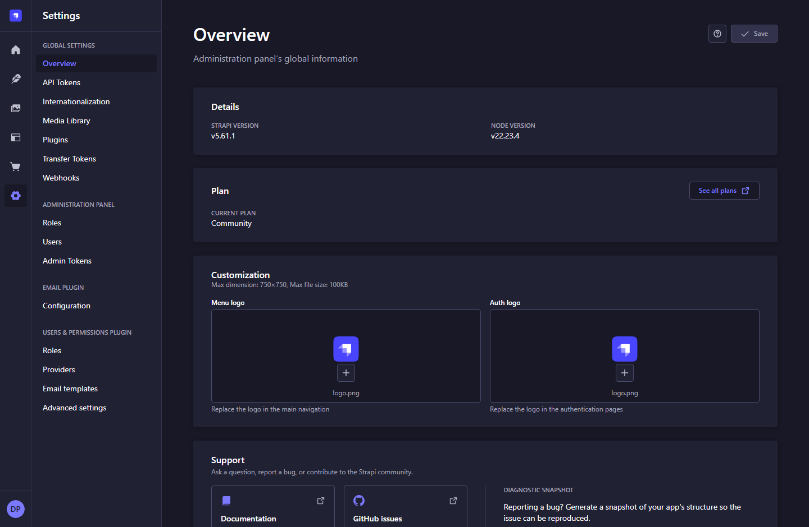
Figure 24. Application settings overview. Click to open at full resolution. What to do Use this page to confirm the Strapi application information. Menu and authentication logos are admin branding controls, separate from the Next.js website design. Coordinate application configuration changes with the developer. Note: The Community plan and available controls reflect the currently installed local application.Back to contents SCREEN 7.2
Content API tokens Navigation: Settings > Global Settings > API Tokens
Manage credentials used by server-side integrations with the content REST API.
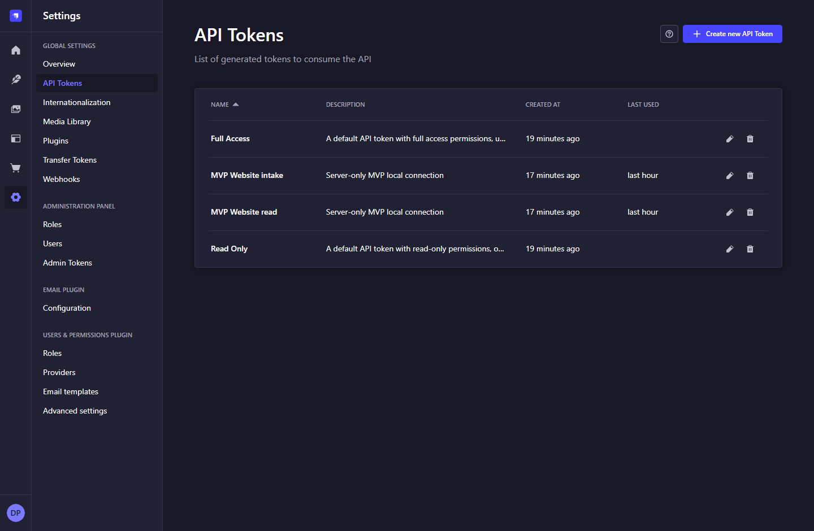
Figure 25. Content API tokens. Click to open at full resolution. What to do The website uses separate content-read and inquiry-create custom tokens. Do not use a Full Access token as the website credential. If rotating a website token, update the matching server environment variable and restart Next.js. Note: Token values are intentionally absent from this document. API Tokens differ from Admin Tokens.Back to contents SCREEN 7.3
Create a custom API token Navigation: Settings > API Tokens > Create new API Token
Configure a token with a specific purpose and limited actions.
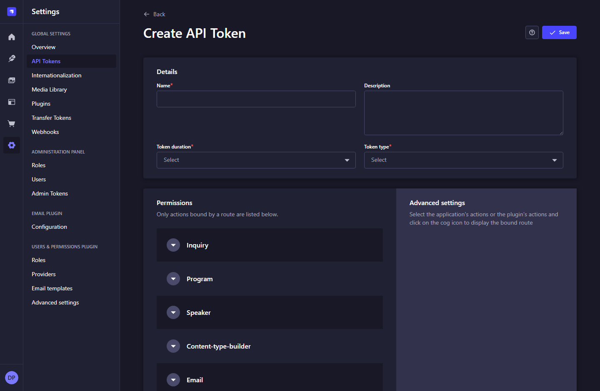
Figure 26. Create a custom API token. Click to open at full resolution. What to do Provide a clear name, description, duration, and Custom token type. For website content, allow Speaker find/findOne and Program find/findOne only. For inquiry intake, allow Inquiry create only; do not grant find, update, or delete. Save the token, then store its value only in the relevant server environment variable. Note: Use STRAPI_READ_TOKEN and STRAPI_INQUIRY_TOKEN in apps/web/.env.local. Never put either token in a NEXT_PUBLIC variable.Back to contents SCREEN 7.4
Administrator accounts Navigation: Settings > Administration Panel > Users
Review the staff accounts that can access Strapi.
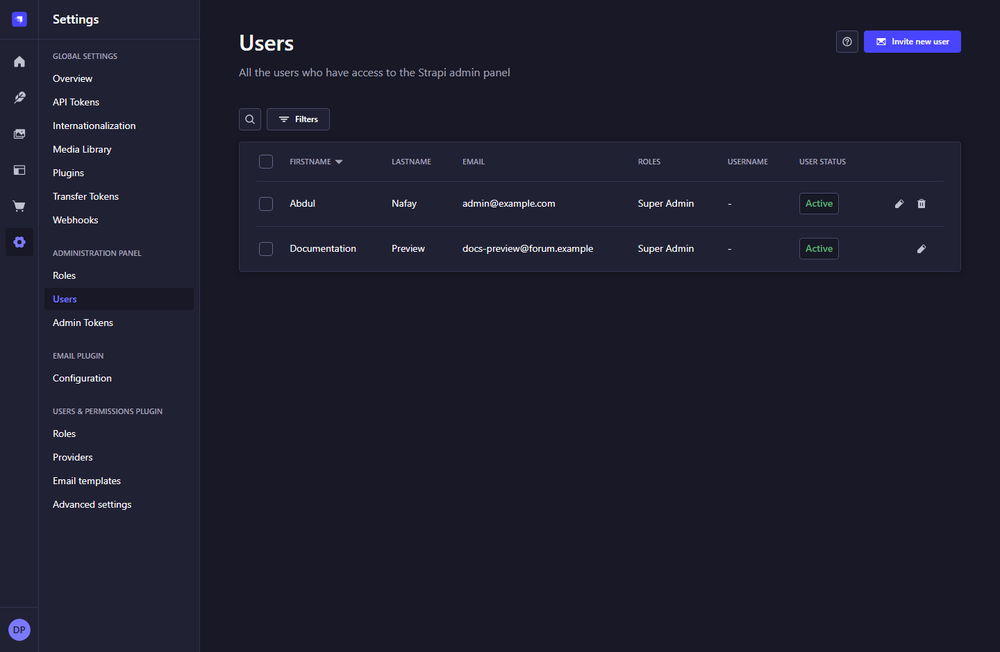
Figure 27. Administrator accounts. Click to open at full resolution. What to do Check each account role and Active status. Use Invite new user to onboard a staff member. Deactivate or remove departed staff through the available account actions, following your organization process. Note: These are administrator accounts. They are separate from the User collection supplied by Users & Permissions.Back to contents SCREEN 7.5
Invite a staff administrator Navigation: Settings > Users > Invite new user
Enter a new staff member and choose the role they require.
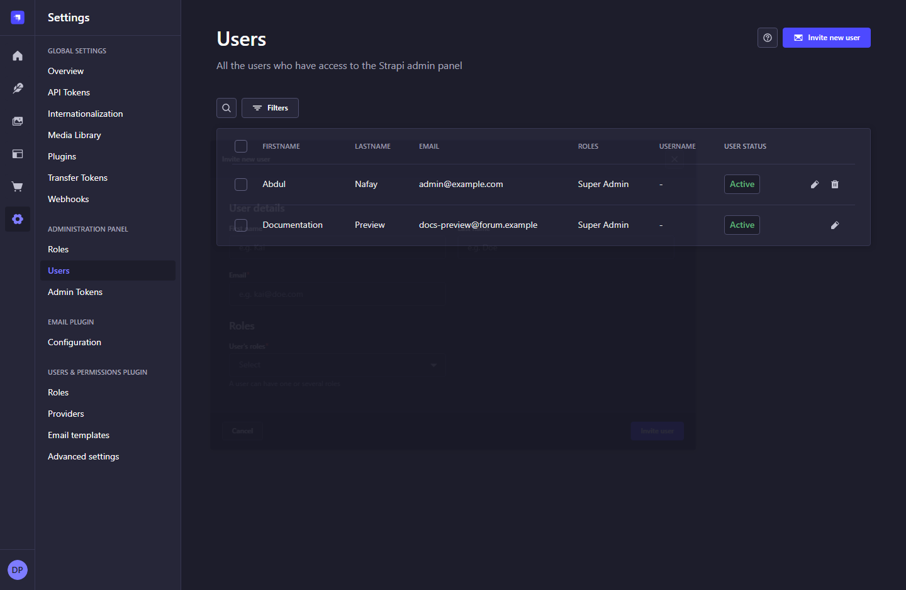
Figure 28. Invite a staff administrator. Click to open at full resolution. What to do Fill first name, email, and the required role selection. Last name is optional. Choose an appropriate role rather than giving every staff member Super Admin access. Review the details before choosing Invite user; follow the registration instructions returned by Strapi. Note: This guide only opened the invite dialog. No invitations were sent.Back to contents SCREEN 7.6
Administrator roles Navigation: Settings > Administration Panel > Roles
Review the built-in Author, Editor, and Super Admin roles.
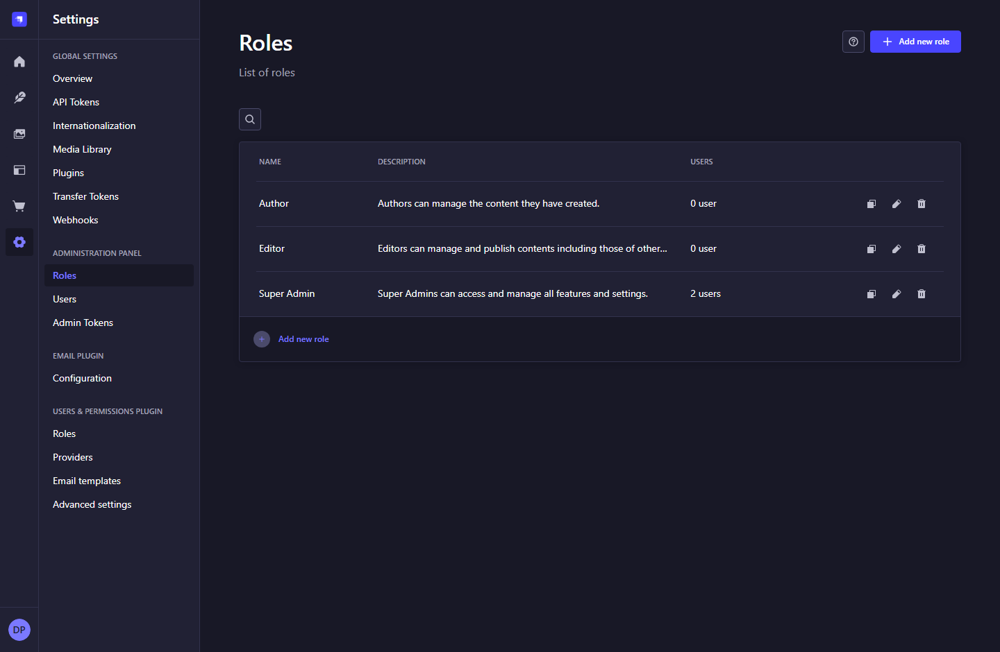
Figure 29. Administrator roles. Click to open at full resolution. What to do Open a role to inspect its actual permissions before assigning it. Use content permissions for daily editors and reserve application settings for administrators. Duplicate or add a role when a deliberately scoped role is needed. Note: Default role descriptions are not a substitute for reviewing the configured permission matrix.Back to contents SCREEN 7.7
Role permissions matrix Navigation: Settings > Administration Panel > Roles > Editor
Configure access to collections, plugins, and settings.
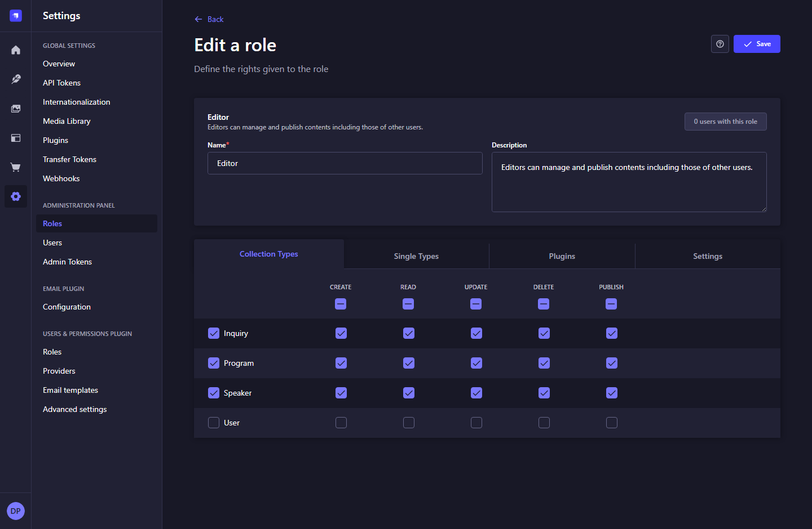
Figure 30. Role permissions matrix. Click to open at full resolution. What to do Review Create, Read, Update, Delete, and Publish permissions per collection. Use the Plugins and Settings tabs to inspect additional access. Choose Save only after reviewing the intended permissions with the application owner. Note: The documentation capture did not change role permissions.Back to contents SCREEN 7.8
Create an administrator role Navigation: Settings > Roles > Add new role
Define a named role and the access it should grant.
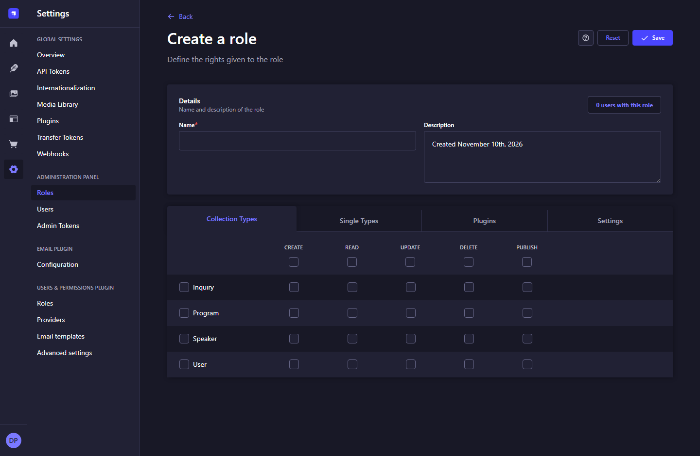
Figure 31. Create an administrator role. Click to open at full resolution. What to do Enter a clear role name and description. Select only the collection actions needed by the role. Review plugin/settings access, save the role, and assign it to an appropriate administrator. Note: A role does not create a user. Assign roles from the administrator user or invite workflow.Back to contents SCREEN 7.9
Administrative API tokens Navigation: Settings > Administration Panel > Admin Tokens
Manage programmatic access to admin features.
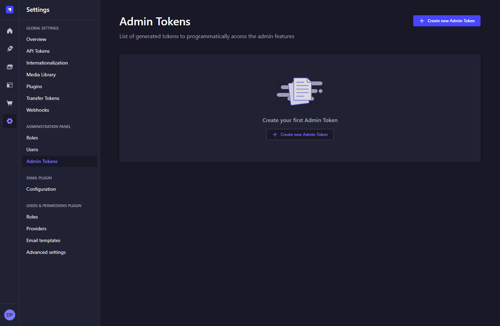
Figure 32. Administrative API tokens. Click to open at full resolution. What to do Review existing tokens and their purpose before making changes. The website content client does not need an Admin Token. Use content API tokens for the Next.js REST connection described earlier. Note: This optional built-in capability is not required for operating the MVP website.Back to contents SCREEN 7.10
Create an administrative token Navigation: Settings > Admin Tokens > Create new Admin Token
Set up a deliberately scoped admin automation credential when required.
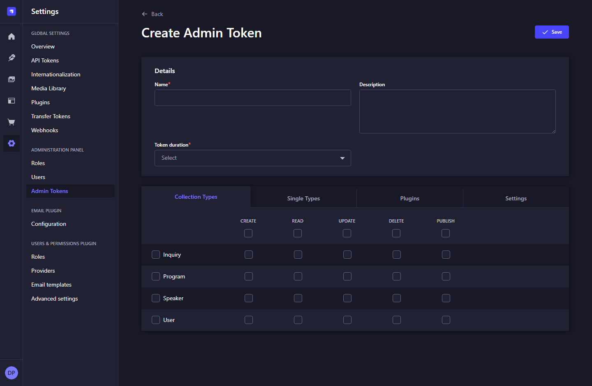
Figure 33. Create an administrative token. Click to open at full resolution. What to do Enter name, description, and duration. Review the collection, plugin, and settings permission tabs. Create this credential only for a specific administrative integration, and keep it out of browser code. Note: No Admin Token was created during documentation. This screen is included for completeness.Back to contents 8. Other built-in Strapi settings Reference screens included with Strapi; most are outside daily MVP operations.
SCREEN 8.1
Application API roles Navigation: Settings > Users & Permissions Plugin > Roles
View Public and Authenticated permissions for application users.
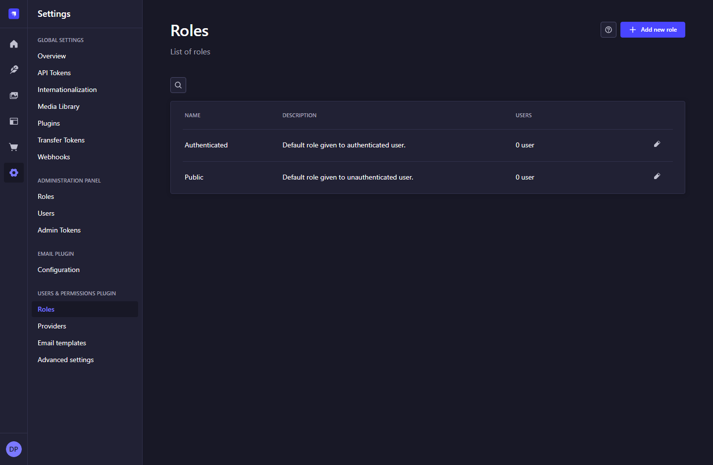
Figure 34. Application API roles. Click to open at full resolution. What to do Distinguish these roles from administrator roles. Public represents requests without an application-user login. Open a role to inspect the allowed content API actions. Note: The Next.js website uses scoped server tokens and has no customer sign-in feature.Back to contents SCREEN 8.2
Public content permissions Navigation: Settings > Users & Permissions > Roles > Public
Inspect which actions unauthenticated API requests may use.
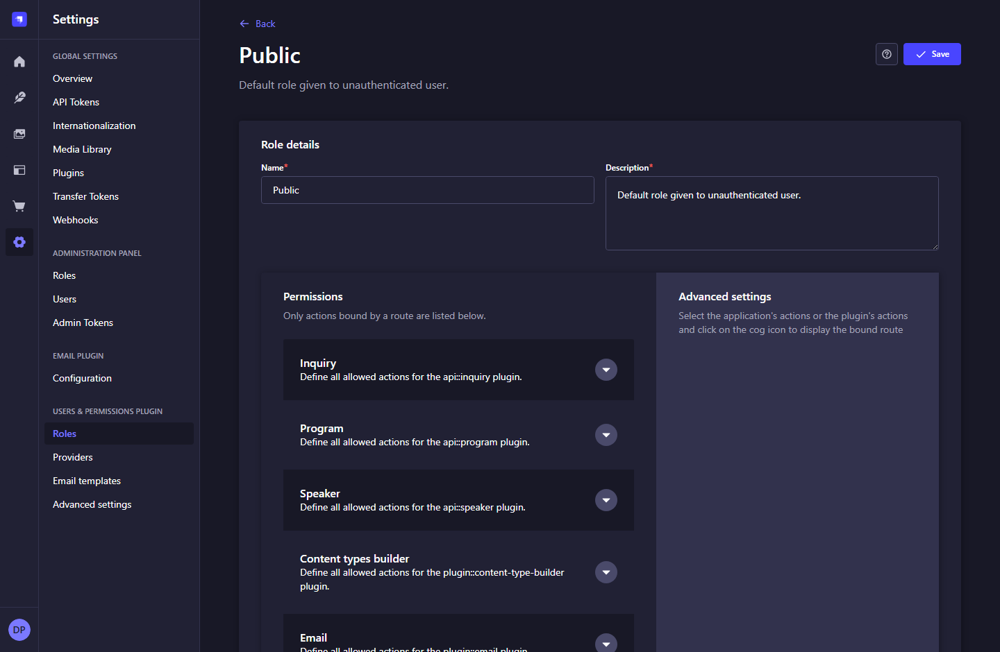
Figure 35. Public content permissions. Click to open at full resolution. What to do Keep all Inquiry actions unchecked for Public and Authenticated roles. Speaker and Program public actions may also remain disabled because the website fetches with its server token. Do not enable public inquiry reads as a way to make the contact form work. Note: The contact form posts to the Next.js endpoint, which calls Strapi with the create-only intake token.Back to contents SCREEN 8.3
Application-user collection Navigation: Content Manager > User
A default collection installed by the Users & Permissions plugin.
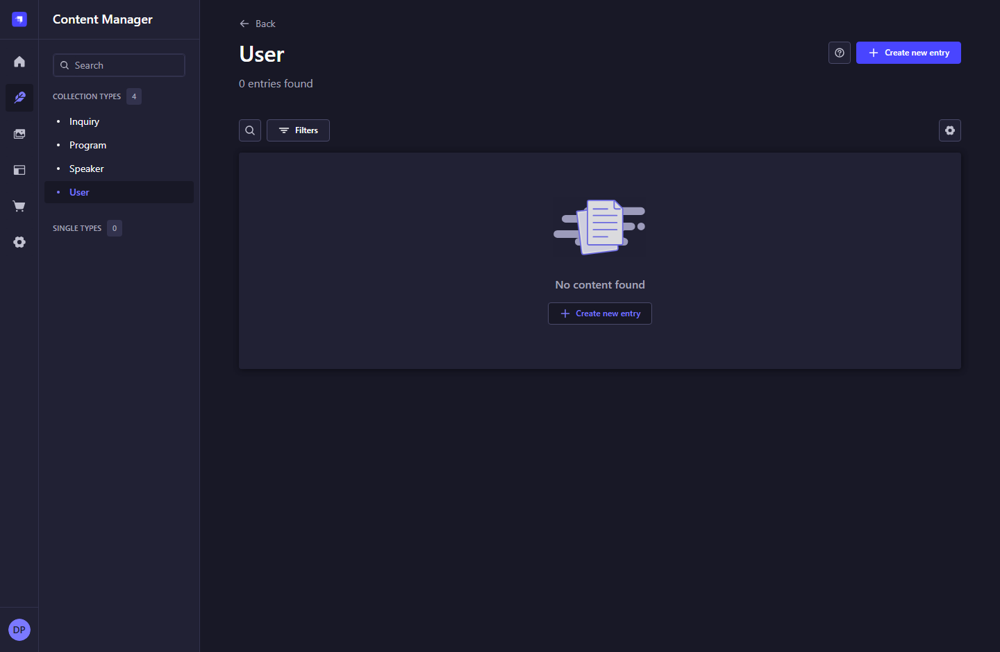
Figure 36. Application-user collection. Click to open at full resolution. What to do This collection contains application-user records, not Strapi administrators. Use Settings > Administration Panel > Users to manage staff. Leave this collection unused for the current website unless a separately approved requirement introduces customer accounts. Note: Seeing this default User collection does not mean customer login has been implemented.Back to contents SCREEN 8.4
Application authentication providers Navigation: Settings > Users & Permissions > Providers
View the plugin provider settings bundled with Strapi.
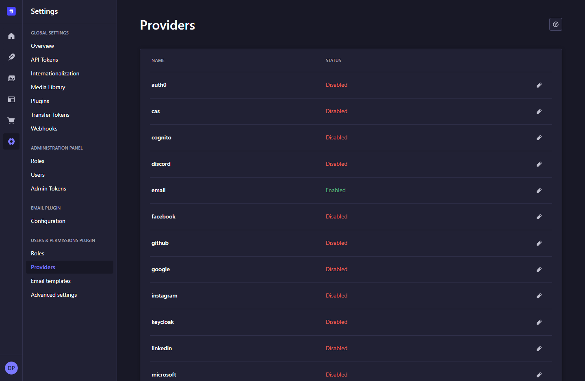
Figure 37. Application authentication providers. Click to open at full resolution. What to do The screen lists email and external authentication providers. Leave provider configuration to a separate authentication requirement. Changing these providers does not configure the Next.js contact form or administrator roles. Note: Provider screens are documented as built-in settings; the MVP website does not use them.Back to contents SCREEN 8.5
Application-user email templates Navigation: Settings > Users & Permissions > Email templates
Review templates for application-user password reset and email confirmation.
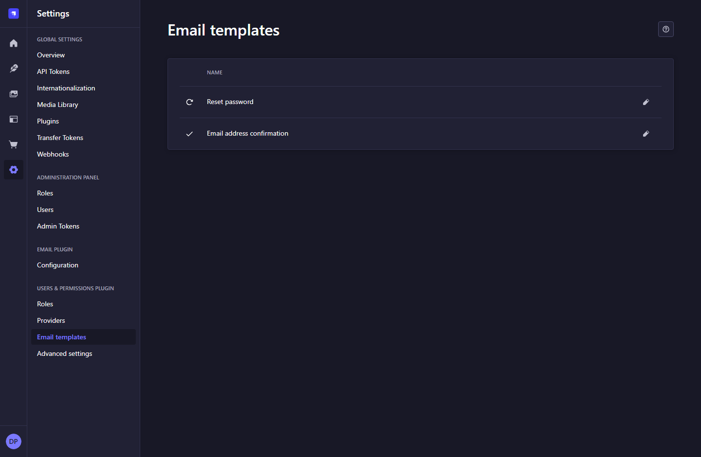
Figure 38. Application-user email templates. Click to open at full resolution. What to do Select a template to inspect its sender, subject, and body where editing is permitted. Coordinate template changes with the developer and a working email provider. Do not expect these templates to create contact inquiry notifications. Note: Inquiry notification emails are outside the current MVP.Back to contents SCREEN 8.6
Application-user advanced settings Navigation: Settings > Users & Permissions > Advanced settings
Review registration and email-confirmation options supplied by the plugin.
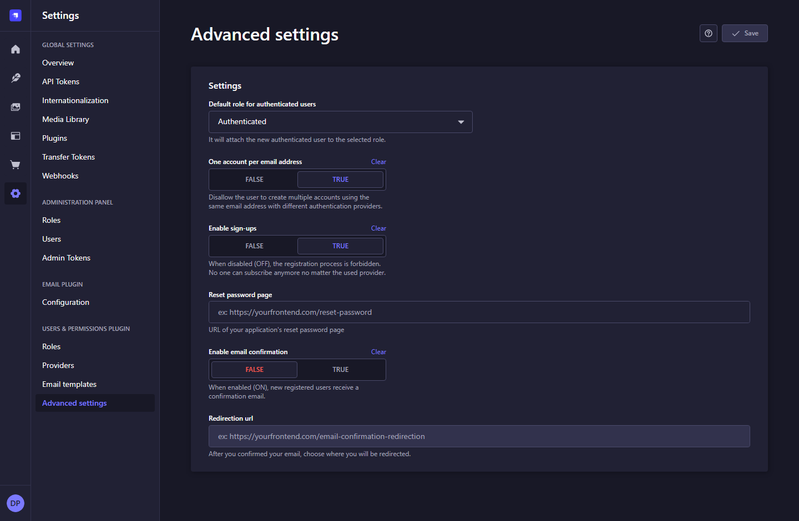
Figure 39. Application-user advanced settings. Click to open at full resolution. What to do Controls include default registration role, one account per email, sign-ups, and confirmation settings. These options affect the plugin APIs; they do not add a login UI to Next.js. Change them only as part of an intentional application-authentication configuration. Note: No sign-up or authentication settings were changed for the documentation.Back to contents SCREEN 8.7
Email provider configuration Navigation: Settings > Email Plugin > Configuration
Inspect the active email provider and its test-delivery screen.
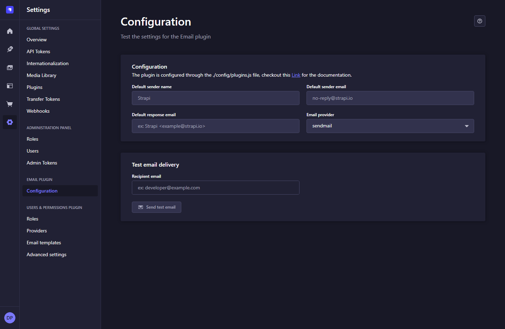
Figure 40. Email provider configuration. Click to open at full resolution. What to do The local application currently reports the sendmail provider. Provider configuration is managed in the CMS configuration/environment by the developer. Use the test-delivery form only when you intend to send a test message. Note: No test email was sent. This setup does not imply production email delivery is configured.Back to contents SCREEN 8.8
Content locales Navigation: Settings > Global Settings > Internationalization
View the configured content locales.
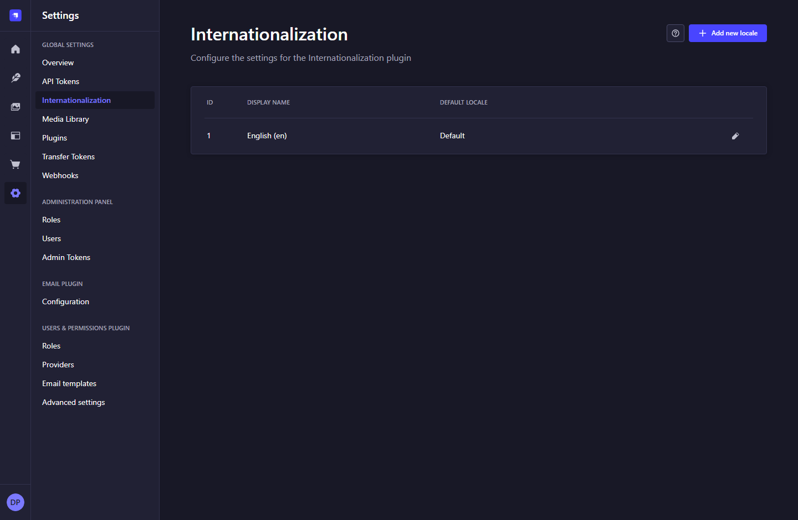
Figure 41. Content locales. Click to open at full resolution. What to do The current application lists English as the default locale. Admin interface language is changed from your profile, not this screen. Adding a locale alone does not implement translated Next.js routes or translated content models. Note: The current MVP is a single-language website.Back to contents SCREEN 8.9
Media processing settings Navigation: Settings > Global Settings > Media Library
Review automatic image-processing options.
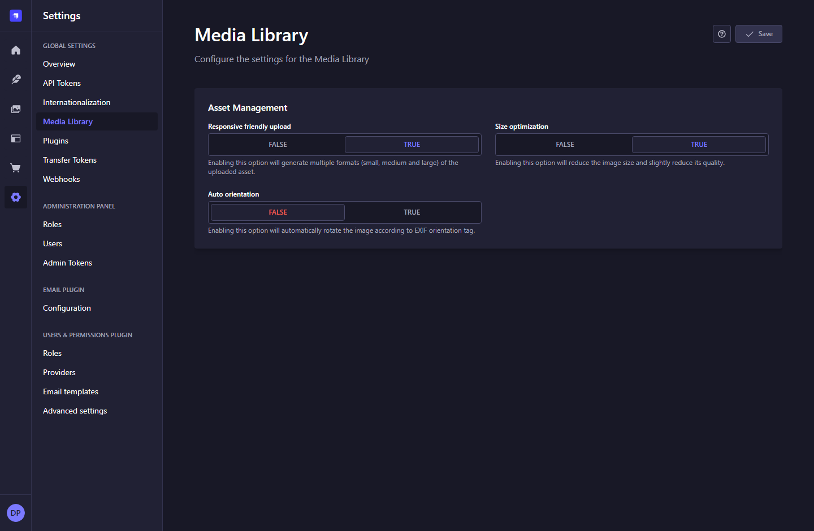
Figure 42. Media processing settings. Click to open at full resolution. What to do Responsive formats, size optimization, and auto orientation can affect new uploads. Coordinate changes with the developer, especially when storage providers or image delivery rules are involved. Review uploaded results after a setting change. Note: These controls manage Strapi media processing, not the design of frontend image cards.Back to contents SCREEN 8.10
Installed plugins Navigation: Settings > Global Settings > Plugins
Inspect the plugins available in this Strapi installation.
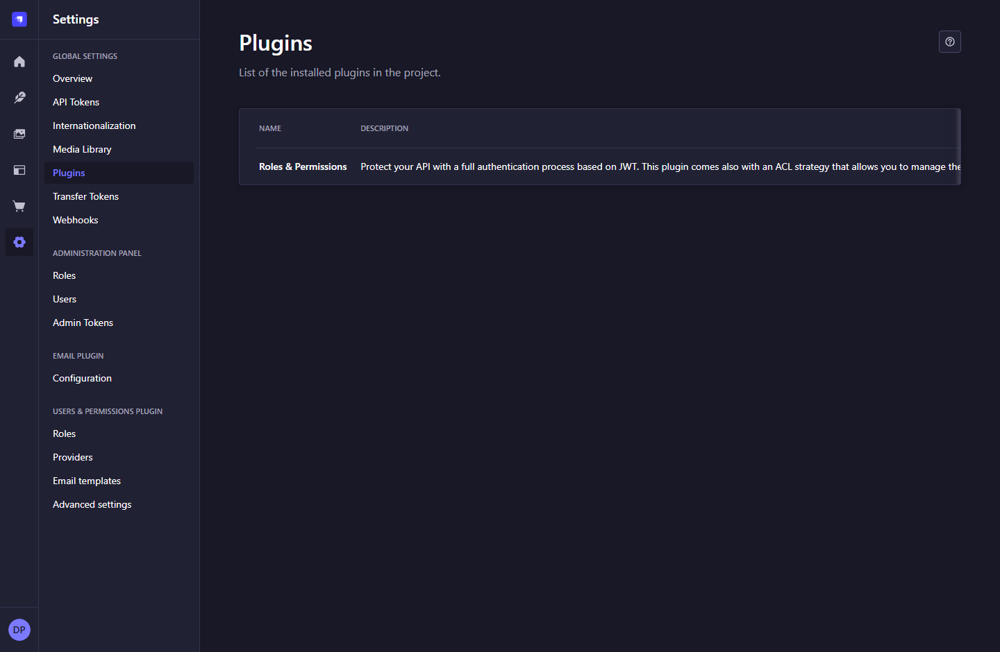
Figure 43. Installed plugins. Click to open at full resolution. What to do Use this list when communicating the current setup to a developer. Plugin installation, updates, and removal belong in the development workflow. The Marketplace icon opens the external Strapi marketplace rather than a project admin screen. Note: External marketplace pages and paid feature onboarding are not part of this local screen guide.Back to contents SCREEN 8.11
Project transfer credentials Navigation: Settings > Global Settings > Transfer Tokens
Manage credentials used for Strapi data-transfer operations.
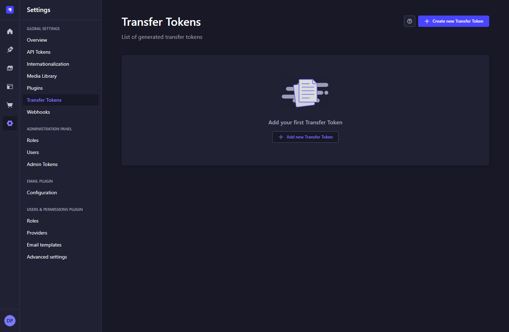
Figure 44. Project transfer credentials. Click to open at full resolution. What to do Review existing transfer tokens before a migration task. Transfer tokens are separate from the website content and inquiry tokens. Leave this screen unchanged during normal speaker/program administration. Note: The MVP does not require a transfer token for daily use.Back to contents SCREEN 8.12
Create a transfer token Navigation: Settings > Transfer Tokens > Create new Transfer Token
Define a credential for an intentional project data-transfer task.
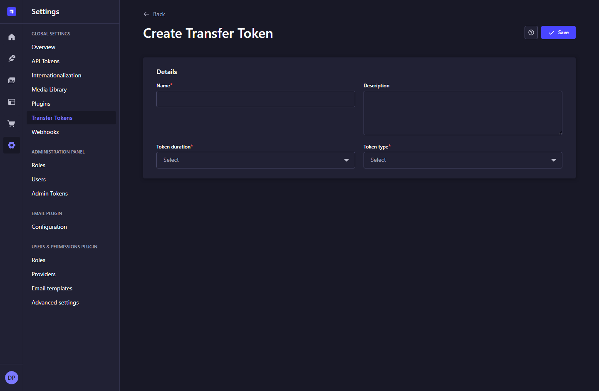
Figure 45. Create a transfer token. Click to open at full resolution. What to do Provide name, description, duration, and the required transfer token type. Coordinate the operation with the developer and the source/destination project owners. Store the resulting credential outside public code and documentation. Note: No transfer token was created and no data transfer was performed.Back to contents SCREEN 8.13
Webhook list Navigation: Settings > Global Settings > Webhooks
Review configured integrations triggered by Strapi events.
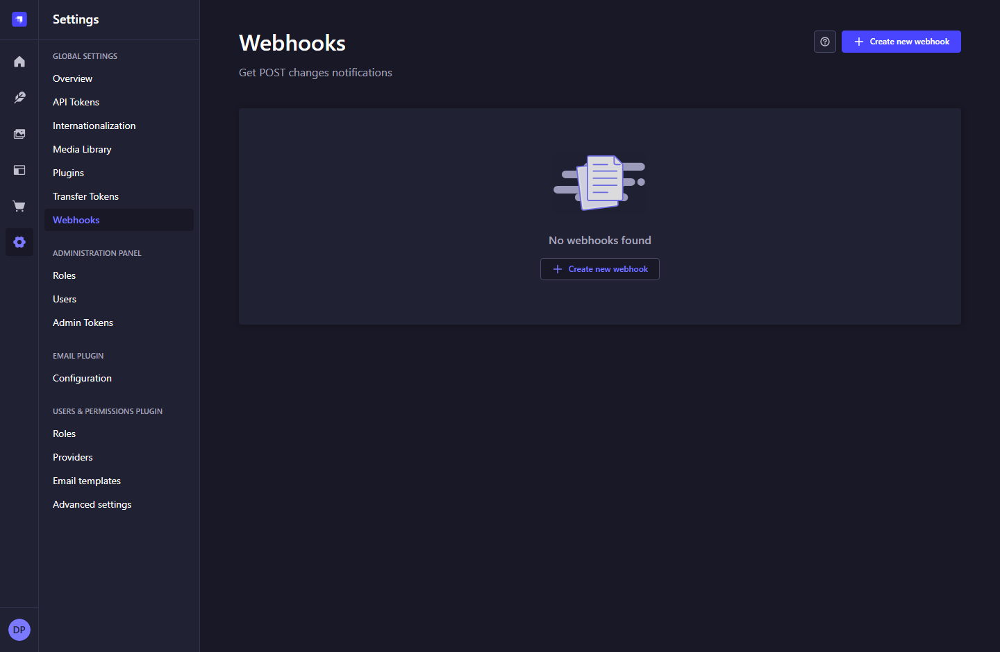
Figure 46. Webhook list. Click to open at full resolution. What to do The current local project has no configured webhooks. Publishing works without a revalidation webhook because Next.js requests current content. Add an integration only when it has a concrete operational requirement. Note: There are no automated CRM, email, or booking integrations in this MVP.Back to contents SCREEN 8.14
Create a webhook Navigation: Settings > Webhooks > Create new webhook
Configure an explicit external event destination when required.
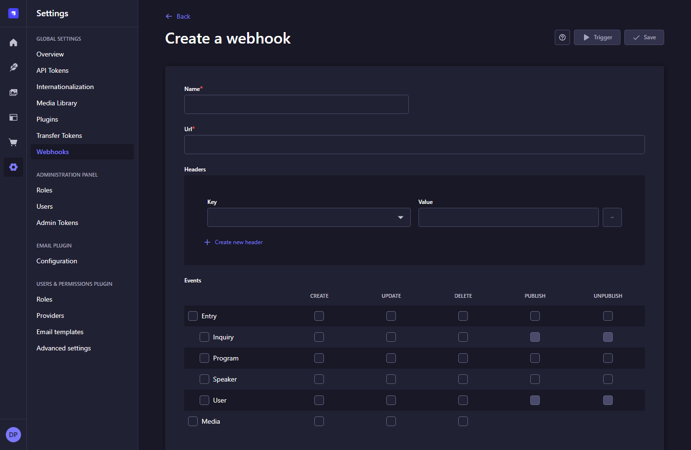
Figure 47. Create a webhook. Click to open at full resolution. What to do Provide the destination name and URL, then any required headers. Select only the events and content types the receiving integration needs. Review the destination and payload exposure before saving or triggering a webhook. Note: No webhook was saved or triggered. This optional form is shown for completeness.Back to contents